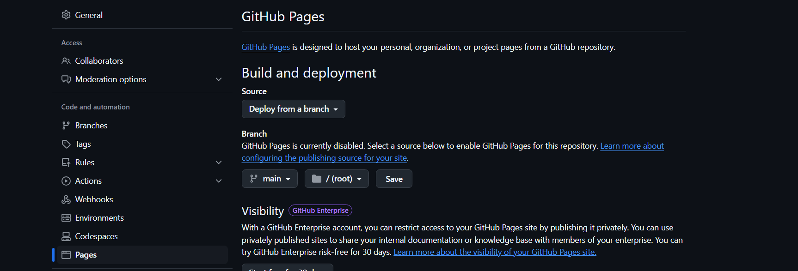
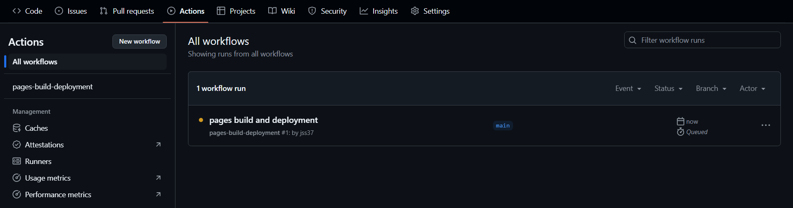
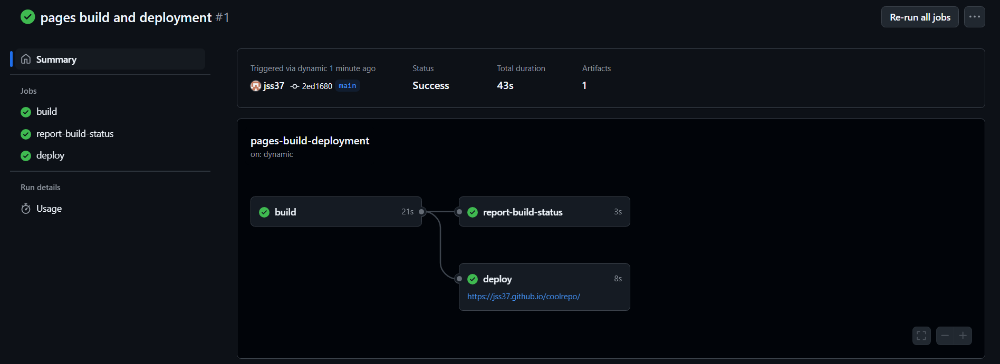

first, make a new repository on GitHub

if you've already made your html file, you can select upload, otherwise, select create a new file

make sure your file is named 'index.html', if it isn't click on the file and go to the little pen/pencil icon thing to edit the code and rename it

under 'Settings', and then 'Pages', select 'Deploy from branch', and then 'Save'
under the 'Actions' tab you will be able to see the status of the deployment
once it's all green, click on 'pages build and deployment, and if you didnt break anything youll have a link to your fancy webpage!'
FYI: Any changes you make to the original index file, or additions to the folder (new images, script files, etc) will automatically initalize the page to update